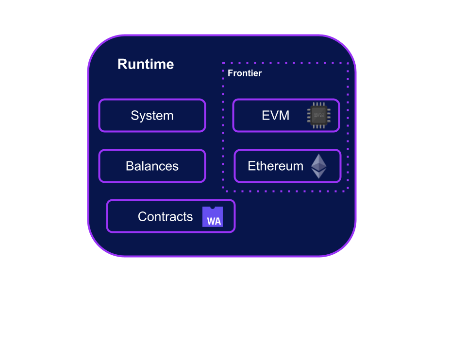
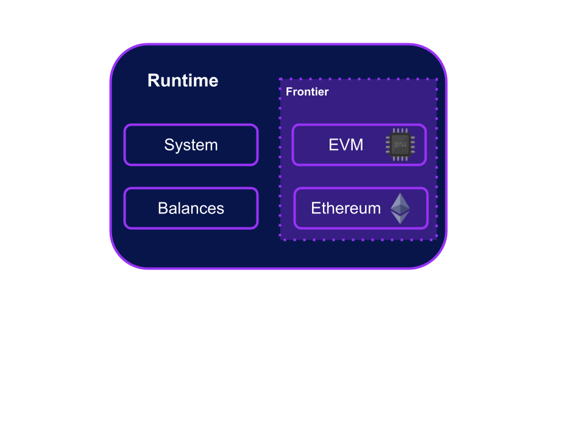
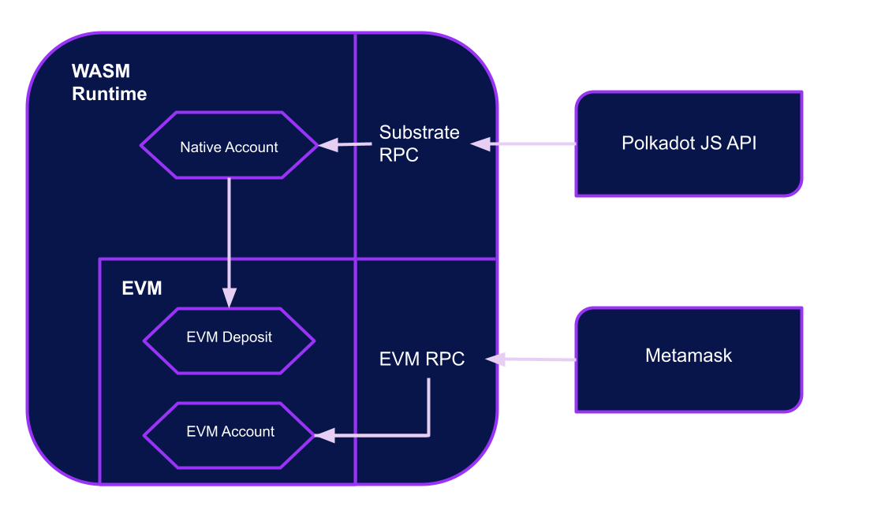
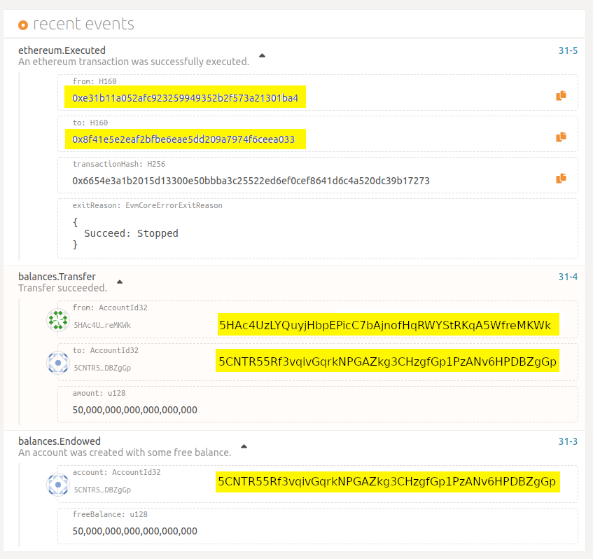

<!DOCTYPE html>
<html lang="en">
  <head>
    <meta charset="utf-8" />
    <meta name="viewport" content="width=device-width, initial-scale=1.0, maximum-scale=1.0, user-scalable=no" />

    <title>Smart Contracts</title>
    <link rel="shortcut icon" href="./../../../favicon.ico" />
    <link rel="stylesheet" href="./../../../dist/reset.css" />
    <link rel="stylesheet" href="./../../../dist/reveal.css" />
    <link rel="stylesheet" href="./../../../assets/styles/polkadot-theme.css" id="theme" />
    <link rel="stylesheet" href="./../../../css/highlight/shades-of-purple.css" />

    <link rel="stylesheet" href="./../../.././assets/styles/custom-classes.css" />
    <link rel="stylesheet" href="./../../.././assets/styles/polkadot-theme-base.css" />
    <link rel="stylesheet" href="./../../.././assets/styles/PBA-theme.css" />
    <link rel="stylesheet" href="./../../.././plugin/design-system/index.css" />

  </head>
  <body class="site">
    <header class="site-header">
      <a href="">
        
      </a>
      
    </header>
    <main class="site-reveal reveal">
      <article class="slides">
        <section  data-markdown><script type="text/template">

# Smart Contracts
</script></section><section  data-markdown><script type="text/template">
## Smart Contracts VS Pallets

<div class="flex-container">
<div class="left">

Additional layer of logic on top of a blockchain’s existing core logic.

- There are three safeguards in place to make Smart Contracts work properly and securely.
  - _Predefined Fees_: Ensure that contract developers are charged for computation and storage defined at runtime level.
  - _Sandbox_: Can't modify core blockchain storage or the storage of other contracts directly.
  - _Revert_: Reverting transactions when they fail so no state is updated when things go wrong.

In contrast, pallets are compiled together to create the base runtime of a parachain.
Runtime development has no safeguards against malicious actors and inexperienced developers.

</div>
</div>

<aside class="notes"><p>Smart contracts add an additional layer of logic on top of a blockchain’s existing core logic. One benefit of this structure is that anyone can build onto and recreate an existing smart contract and its runtime logic to create a modified version of a given code or protocol. A particularly important feature to smart contracts is the way they perform cross-contract calling to delegate and message other contracts. Anyone is capable of publishing smart contracts onto existing blockchains, including malicious actors and inexperienced developers. However, there are a number of safeguards for this.</p>
<p>In contrast, pallets are compiled together to create the base runtime of a parachain. Runtime development has no safeguards against malicious actors and inexperienced developers. You have full control of the underlying logic that each node on your network will run. You have full access to each and every storage item across all of your modules, which you can modify and control. You can even brick your chain with incorrect logic or poor error handling.</p>
<p>Pallets also provide granular control of transaction (TX) fees, allowing developers to be able to make certain, or all, TXs free. This implementation can get as specific as only charging fees when certain TX conditions are met.</p>
<p>All of this control provided by Substrate pallets creates a double-edged sword. More control in “bricking” or blocking your own chains means more room for errors, compared to smart contracts.</p>
</aside></script></section><section  data-markdown><script type="text/template">
## Smart Contracts Pallets

Substrate provides different Smart Contracts' options.

- Pallet Contracts - WASM execution environment
- Frontier - EVM execution environment



<aside class="notes"><p>Smart Contracts don&#39;t come by default in a Substrate chain. We need to add an execution environment to enable this interactions.
Substrate chains need to have either the Smart Contracts pallet or Frontier.</p>
</aside></script></section><section  data-markdown><script type="text/template">
## Ethereum Smart Contracts Compatibility

Smart contracts on [Frontier](https://github.com/paritytech/frontier) can be implemented using any language which can compile smart contracts to EVM-compatible bytecode.

<div class="flex-container">

- Solidity
- Vyper

</div>

<div class="right">


</div>

<aside class="notes"><p>Smart contracts on Frontier can be implemented using Solidity, Vyper, and any other language which can compile smart contracts to EVM bytecode.
Frontier aims to provide a low-friction and secure environment for the development, testing, and execution of smart contracts that is compatible with the existing Ethereum developer toolchain.</p>
</div></aside></script></section><section  data-markdown><script type="text/template">
## Frontier

Frontier is the software suite that provides an Ethereum compatibility layer for Substrate.
It has two components that can be activated separately.



<aside class="notes"><p><strong>Pallet EVM</strong>: This is the pallet that enables functionality of running EVM contracts. Existing EVM code can be used from there, using addresses and values mapped directly to Substrate.</p>
<p><strong>Pallet Ethereum</strong>: The pallet, combined with the RPC module, enables Ethereum block emulation, validates Ethereum-encoded transactions, and allows existing dapps to be deployed on a Substrate blockchain with minimal modifications.</p>
<p>A Web3 JS RPC call from a DApp or existing Ethereum developer tool, such as Truffle, is received by a Frontier node. The node will have both Web3 RPCs and Substrate RPCs available, which means that you can use Ethereum or Substrate tools when interacting with a Frontier node. These RPC calls are handled by associated Substrate runtime functions. The Substrate runtime checks signatures and handles any extrinsics. Smart contract calls are ultimately passed to the EVM to execute the state transitions.</p>
</aside></script></section><section  data-markdown><script type="text/template">
## Pallet EVM

Wraps the SputnikVM

```rust [1-2|1-3|1-4|1-5|1-6|1-7|1-8|1-9|1-10|1-11|1-12|1-13|1-14|1-15]
impl pallet_evm::Config for Runtime {
	type FeeCalculator = FixedGasPrice;
	type GasWeightMapping = FrontierGasWeightMapping;
	type BlockHashMapping = EthereumBlockHashMapping<Self>;
	type CallOrigin = EnsureAddressTruncated;
	type WithdrawOrigin = EnsureAddressTruncated;
	type AddressMapping = HashedAddressMapping<BlakeTwo256>;
	type Currency = Balances;
	type Event = Event;
	type Runner = pallet_evm::runner::stack::Runner<Self>;
	type PrecompilesType = FrontierPrecompiles<Self>;
	type PrecompilesValue = PrecompilesValue;
	type ChainId = ChainId;
	type BlockGasLimit = BlockGasLimit;
	type OnChargeTransaction = pallet_evm::EVMCurrencyAdapter<Balances, DealWithFees<Runtime>>;
	type FindAuthor = FindAuthorTruncated<Aura>;
}
```

<aside class="notes"><p>It uses the SputnikVM written by Wei Tang from Parity and it wraps it in a substrate pallet so that we can put an existing EVM inside the substrate runtime.</p>
</aside></script></section><section  data-markdown><script type="text/template">
## Pallet EVM - GasWeightMapping

```rust [3,14]
impl pallet_evm::Config for Runtime {
	type FeeCalculator = FixedGasPrice;
	type GasWeightMapping = FrontierGasWeightMapping;
	type BlockHashMapping = EthereumBlockHashMapping<Self>;
	type CallOrigin = EnsureAddressTruncated;
	type WithdrawOrigin = EnsureAddressTruncated;
	type AddressMapping = HashedAddressMapping<BlakeTwo256>;
	type Currency = Balances;
	type Event = Event;
	type Runner = pallet_evm::runner::stack::Runner<Self>;
	type PrecompilesType = FrontierPrecompiles<Self>;
	type PrecompilesValue = PrecompilesValue;
	type ChainId = ChainId;
	type BlockGasLimit = BlockGasLimit;
	type OnChargeTransaction = pallet_evm::EVMCurrencyAdapter<Balances, DealWithFees<Runtime>>;
	type FindAuthor = FindAuthorTruncated<Aura>;
}
```
</script></section><section  data-markdown><script type="text/template">
```rust
pub const WEIGHT_PER_GAS: u64 = WEIGHT_PER_SECOND / GAS_PER_SECOND;

pub struct FrontierGasWeightMapping;

impl GasWeightMapping for FrontierGasWeightMapping {
	fn gas_to_weight(gas: u64) -> Weight {
		gas.saturating_mul(WEIGHT_PER_GAS)
	}
	fn weight_to_gas(weight: Weight) -> u64 {
		u64::try_from(weight.wrapping_div(WEIGHT_PER_GAS)).unwrap_or(u32::MAX as u64)
	}
}
```

## Pallet EVM [Internals]

```rust
#[pallet::weight(T::GasWeightMapping::gas_to_weight(*gas_limit))]
```
</script></section><section  data-markdown><script type="text/template">
## Pallet EVM - BlockHashMapping

```rust [1,4]
impl pallet_evm::Config for Runtime {
	type FeeCalculator = FixedGasPrice;
	type GasWeightMapping = FrontierGasWeightMapping;
	type BlockHashMapping = EthereumBlockHashMapping<Self>;
	type CallOrigin = EnsureAddressTruncated;
	type WithdrawOrigin = EnsureAddressTruncated;
	type AddressMapping = HashedAddressMapping<BlakeTwo256>;
	type Currency = Balances;
	type Event = Event;
	type Runner = pallet_evm::runner::stack::Runner<Self>;
	type PrecompilesType = FrontierPrecompiles<Self>;
	type PrecompilesValue = PrecompilesValue;
	type ChainId = ChainId;
	type BlockGasLimit = BlockGasLimit;
	type OnChargeTransaction = pallet_evm::EVMCurrencyAdapter<Balances, DealWithFees<Runtime>>;
	type FindAuthor = FindAuthorTruncated<Aura>;
}
```

```rust
/// Returns the Ethereum block hash by number.
pub struct EthereumBlockHashMapping<T>(PhantomData<T>);
impl<T: Config> BlockHashMapping for EthereumBlockHashMapping<T> {
	fn block_hash(number: u32) -> H256 {
		BlockHash::<T>::get(U256::from(number))
	}
}
```

<aside class="notes"><p>Does a conversion from a block number into an Ethereum block hash.</p>
<p>The hash mapping allows an EVM contract to ask for the parent block hash or grandparent block hash.
parent block hash or the grandparent block hash. It is common to return the previous substrate blocks because
then you at least get some pseudoentropy that you could use. In order to use this specific Block Hash Mapping,
we need to have the Ethereum Pallet which handles this type of data format.</p>
</aside></script></section><section  data-markdown><script type="text/template">
## Pallet EVM - Currency

```rust [8]
impl pallet_evm::Config for Runtime {
	type FeeCalculator = FixedGasPrice;
	type GasWeightMapping = FrontierGasWeightMapping;
	type BlockHashMapping = EthereumBlockHashMapping<Self>;
	type CallOrigin = EnsureAddressTruncated;
	type WithdrawOrigin = EnsureAddressTruncated;
	type AddressMapping = HashedAddressMapping<BlakeTwo256>;
	type Currency = Balances;
	type Event = Event;
	type Runner = pallet_evm::runner::stack::Runner<Self>;
	type PrecompilesType = FrontierPrecompiles<Self>;
	type PrecompilesValue = PrecompilesValue;
	type ChainId = ChainId;
	type BlockGasLimit = BlockGasLimit;
	type OnChargeTransaction = pallet_evm::EVMCurrencyAdapter<Balances, DealWithFees<Runtime>>;
	type FindAuthor = FindAuthorTruncated<Aura>;
}
```

Currency type will be treated as the main currency inside your EVM. It becomes the
native token of the ethereum environment. In this case we wired it up to pallet balances.
</script></section><section  data-markdown><script type="text/template">
## Pallet EVM - AddressMapping

```rust [7]
impl pallet_evm::Config for Runtime {
	type FeeCalculator = FixedGasPrice;
	type GasWeightMapping = FrontierGasWeightMapping;
	type BlockHashMapping = EthereumBlockHashMapping<Self>;
	type CallOrigin = EnsureAddressTruncated;
	type WithdrawOrigin = EnsureAddressTruncated;
	type AddressMapping = HashedAddressMapping<BlakeTwo256>;
	type Currency = Balances;
	type Event = Event;
	type Runner = pallet_evm::runner::stack::Runner<Self>;
	type PrecompilesType = FrontierPrecompiles<Self>;
	type PrecompilesValue = PrecompilesValue;
	type ChainId = ChainId;
	type BlockGasLimit = BlockGasLimit;
	type OnChargeTransaction = pallet_evm::EVMCurrencyAdapter<Balances, DealWithFees<Runtime>>;
	type FindAuthor = FindAuthorTruncated<Aura>;
}
```
</script></section><section  data-markdown><script type="text/template">
## Pallet EVM - AddressMapping

- Ethereum uses a 160-bit hex string as its public address.
- On Substrate, we call this format H160, for 160-bit hash.
- The EVM environment has its own balance called the EVM deposit, which can be withdrawn by Substrate native accounts.



<aside class="notes"><p>Ethereum uses a 160-bit hex string as its public address, which users can send and receive transactions. On Substrate, we call this format H160, for 160-bit hash. For a blockchain to be Ethereum-compatible, they must use H160 accounts, as that is the only account format that EVM and all tools within the Ethereum ecosystem will recognize. This rule applies to Substrate chains with the EVM pallet as well.</p>
<p>The EVM environment has its own balance called the EVM deposit, which can be withdrawn by Substrate native accounts. A native Substrate SS58 address can be converted to an H160 address that is mapped to an EVM deposit, and an EVM H160 address can be converted to an SS58 address. This allows the accounts to transfer tokens from the native balance to an EVM balance, and vice versa. However, this is a lossy conversion, so you cannot convert an SS58 to H160 and back to the same SS58 address. Furthermore, you can only sign transactions within the environment that the account was created. So for example, through normal ways, you cannot sign an EVM transaction with a native account or the other way around.</p>
</aside></script></section><section  data-markdown><script type="text/template">
## Pallet EVM - AddressMapping



<aside class="notes"><p>If we look at the Ethereum transaction event in detail, we can see the token minting event and the burning event with the correct amount. However, one interesting detail is the account. Although the EVM RPC returns an H160 address, the Substrate RPC will return an SS58 address for all accounts within the EVM sandbox. This is because, in Substrate, the default address format is always SS58.</p>
</aside></script></section><section  data-markdown><script type="text/template">
### So how does Substrate convert the address format, and how does it handle the balances?
</script></section><section  data-markdown><script type="text/template">
## Ethereum address to SS58 ???

```[1|3-6|7-9|11-12|14-15]
0xe31b11a052afc923259949352b2f573a21301ba4 -> 5HAc4UzLYQuyjHbpEPicC7bAjnofHqRWYStRKqA5WfreMKWk

subkey inspect 5HAc4UzLYQuyjHbpEPicC7bAjnofHqRWYStRKqA5WfreMKWk
  Public key (hex):   0xe1ad20aae239ccbb609aa537d515dc9d53c5936ea67d8acc9fe0618925279f7d
  SS58 Address:       5HAc4UzLYQuyjHbpEPicC7bAjnofHqRWYStRKqA5WfreMKWk

subkey inspect --public 0xe1ad20aae239ccbb609aa537d515dc9d53c5936ea67d8acc9fe0618925279f7d
  Public key (hex):     0xe1ad20aae239ccbb609aa537d515dc9d53c5936ea67d8acc9fe0618925279f7d
  SS58 Address:         5HAc4UzLYQuyjHbpEPicC7bAjnofHqRWYStRKqA5WfreMKWk

blake2Hash(toByteArray(["evm:", "0xe31b11a052afc923259949352b2f573a21301ba4"]))
0xe1ad20aae239ccbb609aa537d515dc9d53c5936ea67d8acc9fe0618925279f7d

ss58Encode(0xe1ad20aae239ccbb609aa537d515dc9d53c5936ea67d8acc9fe0618925279f7d, 42)
5HAc4UzLYQuyjHbpEPicC7bAjnofHqRWYStRKqA5WfreMKWk
```

<aside class="notes"><p>there&#39;s this concept of account mappings and the idea is that inside of the evm you have standard ethereum style
h160 accounts and they will have some data associated with them
native accounts and the standard way to do it
is called the hash truncated account mapping that means you take the h160 address you hash it and then you take
the first 32 bytes and map that to a substrate style account 32 account id 32</p>
</aside></script></section><section  data-markdown><script type="text/template">
##

```rust
type AddressMapping = HashedAddressMapping<BlakeTwo256>;
```

## Pallet EVM [Internals]

```rust
/// Hashed address mapping.
pub struct HashedAddressMapping<H>(sp_std::marker::PhantomData<H>);

impl<H: Hasher<Out = H256>> AddressMapping<AccountId32> for HashedAddressMapping<H> {
	fn into_account_id(address: H160) -> AccountId32 {
		let mut data = [0u8; 24];
		data[0..4].copy_from_slice(b"evm:");
		data[4..24].copy_from_slice(&address[..]);
		let hash = H::hash(&data);

		AccountId32::from(Into::<[u8; 32]>::into(hash))
	}
}
```
</script></section><section  data-markdown><script type="text/template">
## AccountId20 (H160)

- Moonbeam has 100% compatibility with Ethereum.
- AccountId becomes H160 in all the runtime.

```rust
type AddressMapping = IntoAddressMapping;
```

```rust
pub struct IntoAddressMapping;

impl<T: From<H160>> pallet_evm::AddressMapping<T> for IntoAddressMapping {
	fn into_account_id(address: H160) -> T {
		address.into()
	}
}

```

<aside class="notes"><p>Another way that you can do it which is the way Moonbeam does. They change the main account type in the runtime to be H160. The substrate native account that backs your evm account is exactly the same
account account. There&#39;s no hashing or truncation happening.</p>
<p>When configuring the Account ID lookup, we need to change <code>AccountIdLookup</code> to <code>IdentityLookup</code>
AccountIdLookup -&gt; Is a lookup implementation returning the <code>AccountId</code> from a <code>MultiAddress</code>
IdentityLookup -&gt; Is a lookup implementation returning the input value.</p>
</aside></script></section><section  data-markdown><script type="text/template">
## Pallet Ethereum

- Ethereum formatted data.
- Ethereum style blocks in storage.

```rust
impl pallet_ethereum::Config for Runtime {
	type Event = Event;
	type StateRoot = pallet_ethereum::IntermediateStateRoot<Self>;
}

```

<aside class="notes"><p>Pallet ethereum is going to allow us to send ethereum formatted data to our chain and
receive ethereum formatted data from our chain.
It keeps the Ethereum style block into storage. This allows any block indexer, explorer or other clients to understand
the data that is stored and remain compatible.</p>
</aside></script></section><section  data-markdown><script type="text/template">
## Precompiles

- Common functionality for smart contracts.
- Compiled and accessible to any Smart Contract.
- Simple as an opcode.
- Workaround to get out of the sandbox in a very limited way.

<aside class="notes"><p>A precompile means a common functionality for smart contracts which has been compiled, so that Ethereum nodes can run this efficiently. From a contract&#39;s perspective, this is just a single command like an opcode. These contracts are implemented as a native implementation.</p>
<p>The EVM environment works on top of Substrate. This means that the block height of the EVM sandbox will depend on the host Substrate network and the host Substrate network will be able to access the EVM state, but the EVM sandbox will not be able to access or mutate the host Substrate network’s state through normal means. Substrate state transition from EVM can only be achieved via custom EVM precompiled contracts.</p>
</aside></script></section><section  data-markdown><script type="text/template">
## Assets Precompiles

#### Solidity Interface

```solidity
pragma solidity ^0.8.0;

/**
    * @title ERC20 interface
    * @dev see https://github.com/ethereum/EIPs/issues/20
    * @dev copied from https://github.com/OpenZeppelin/openzeppelin-contracts
    */
interface IERC20 {
    /**
    * @dev Returns the name of the token.
    * Selector: 06fdde03
    */
    function name() external view returns (string memory);

    /**
    * @dev Returns the symbol of the token.
    * Selector: 95d89b41
    */
    function symbol() external view returns (string memory);

    /**
    * @dev Returns the decimals places of the token.
    * Selector: 313ce567
    */
    function decimals() external view returns (uint8);

    /**
     * @dev Total number of tokens in existence
     * Selector: 18160ddd
     */
    function totalSupply() external view returns (uint256);

    /**
     * @dev Gets the balance of the specified address.
     * Selector: 70a08231
     * @param who The address to query the balance of.
     * @return An uint256 representing the amount owned by the passed address.
     */
    function balanceOf(address who) external view returns (uint256);

    /**
     * @dev Function to check the amount of tokens that an owner allowed to a spender.
     * Selector: dd62ed3e
     * @param owner address The address which owns the funds.
     * @param spender address The address which will spend the funds.
     * @return A uint256 specifying the amount of tokens still available for the spender.
     */
    function allowance(address owner, address spender)
        external view returns (uint256);

    /**
     * @dev Transfer token for a specified address
     * Selector: a9059cbb
     * @param to The address to transfer to.
     * @param value The amount to be transferred.
     */
    function transfer(address to, uint256 value) external returns (bool);

    /**
     * @dev Approve the passed address to spend the specified amount of tokens on behalf
     * of msg.sender.
     * Beware that changing an allowance with this method brings the risk that someone may
     * use both the old
     * and the new allowance by unfortunate transaction ordering. One possible solution to
     * mitigate this race condition is to first reduce the spender's allowance to 0 and set
     * the desired value afterwards:
     * https://github.com/ethereum/EIPs/issues/20#issuecomment-263524729
     * Selector: 095ea7b3
     * @param spender The address which will spend the funds.
     * @param value The amount of tokens to be spent.
     */
    function approve(address spender, uint256 value)
        external returns (bool);

    /**
     * @dev Transfer tokens from one address to another
     * Selector: 23b872dd
     * @param from address The address which you want to send tokens from
     * @param to address The address which you want to transfer to
     * @param value uint256 the amount of tokens to be transferred
     */
    function transferFrom(address from, address to, uint256 value)
        external returns (bool);

    /**
     * @dev Event emitted when a transfer has been performed.
     * Selector: ddf252ad1be2c89b69c2b068fc378daa952ba7f163c4a11628f55a4df523b3ef
     * @param from address The address sending the tokens
     * @param to address The address receiving the tokens.
     * @param value uint256 The amount of tokens transfered.
     */
    event Transfer(
        address indexed from,
        address indexed to,
        uint256 value
    );

    /**
     * @dev Event emitted when an approval has been registered.
     * Selector: 8c5be1e5ebec7d5bd14f71427d1e84f3dd0314c0f7b2291e5b200ac8c7c3b925
     * @param owner address Owner of the tokens.
     * @param spender address Allowed spender.
     * @param value uint256 Amount of tokens approved.
     */
    event Approval(
        address indexed owner,
        address indexed spender,
        uint256 value
    );
}

```
</script></section><section  data-markdown><script type="text/template">
## Assets Precompiles

#### Substrate Implementation

```rust
...
	fn total_supply(
		asset_id: AssetIdOf<Runtime, Instance>,
		handle: &mut impl PrecompileHandle,
	) -> EvmResult<PrecompileOutput> {
		handle.record_cost(RuntimeHelper::<Runtime>::db_read_gas_cost())?;

		// Parse input.
		let input = handle.read_input()?;
		input.expect_arguments(0)?;

		// Fetch info.
		let amount: U256 =
			pallet_assets::Pallet::<Runtime, Instance>::total_issuance(asset_id).into();

		// Build output.
		Ok(succeed(EvmDataWriter::new().write(amount).build()))
	}

	fn balance_of(
		asset_id: AssetIdOf<Runtime, Instance>,
		handle: &mut impl PrecompileHandle,
	) -> EvmResult<PrecompileOutput> {
		handle.record_cost(RuntimeHelper::<Runtime>::db_read_gas_cost())?;

		// Read input.
		let mut input = handle.read_input()?;
		input.expect_arguments(1)?;

		let owner: H160 = input.read::<Address>()?.into();

		// Fetch info.
		let amount: U256 = {
			let owner: Runtime::AccountId = Runtime::AddressMapping::into_account_id(owner);
			pallet_assets::Pallet::<Runtime, Instance>::balance(asset_id, &owner).into()
		};

		// Build output.
		Ok(succeed(EvmDataWriter::new().write(amount).build()))
	}

  fn transfer(
		asset_id: AssetIdOf<Runtime, Instance>,
		handle: &mut impl PrecompileHandle,
	) -> EvmResult<PrecompileOutput> {
		handle.record_log_costs_manual(3, 32)?;

		// Parse input.
		let mut input = handle.read_input()?;
		input.expect_arguments(2)?;

		let to: H160 = input.read::<Address>()?.into();
		let amount = input.read::<BalanceOf<Runtime, Instance>>()?;

		// Build call with origin.
		{
			let origin = Runtime::AddressMapping::into_account_id(handle.context().caller);
			let to = Runtime::AddressMapping::into_account_id(to);

			// Dispatch call (if enough gas).
			RuntimeHelper::<Runtime>::try_dispatch(
				handle,
				Some(origin).into(),
				pallet_assets::Call::<Runtime, Instance>::transfer {
					id: asset_id,
					target: Runtime::Lookup::unlookup(to),
					amount,
				},
			)?;
		}
  ...


```
</script></section><section  data-markdown><script type="text/template">
## References

- [Frontier Repository](https://github.com/paritytech/frontier)
- [Sub0 Workshop](https://www.youtube.com/watch?v=V9KfvhoqLJ4)
- [SputnikVM](https://github.com/rust-blockchain/evm)
</script></section>
      </article>
    </main>

    <script src="./../../../dist/reveal.js"></script>
    <script src="./../../../plugin/markdown/markdown.js"></script>
    <script src="./../../../plugin/highlight/highlight.js"></script>
    <script src="./../../../plugin/zoom/zoom.js"></script>
    <script src="./../../../plugin/notes/notes.js"></script>
    <script src="./../../../plugin/math/math.js"></script>

    <script type="module">
      import DesignSystem from "./../../../plugin/design-system/design-system.js"

      function extend() {
        var target = {};
        for (var i = 0; i < arguments.length; i++) {
          var source = arguments[i];
          for (var key in source) {
            if (source.hasOwnProperty(key)) {
              target[key] = source[key];
            }
          }
        }
        return target;
      }

      // default options to init reveal.js
      var defaultOptions = {
        controls: true,
        progress: true,
        history: true,
        center: true,
        transition: 'default', // none/fade/slide/convex/concave/zoom
        plugins: [
          RevealMarkdown,
          RevealHighlight,
          RevealZoom,
          RevealNotes,
          RevealMath,
          DesignSystem
        ]
      };

      // options from URL query string
      const queryOptions = Reveal().getQueryHash() || {};

      const options = extend(defaultOptions, {"width":1400,"height":900,"margin":0,"minScale":0.2,"maxScale":2,"transition":"none","controls":true,"progress":true,"center":true,"slideNumber":true,"backgroundTransition":"fade"}, queryOptions);
      options.baseUrl = '';
      Reveal.initialize(options);
    </script>
  </body>
</html>
